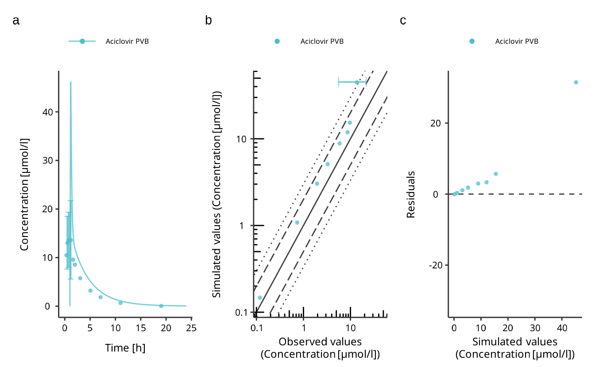
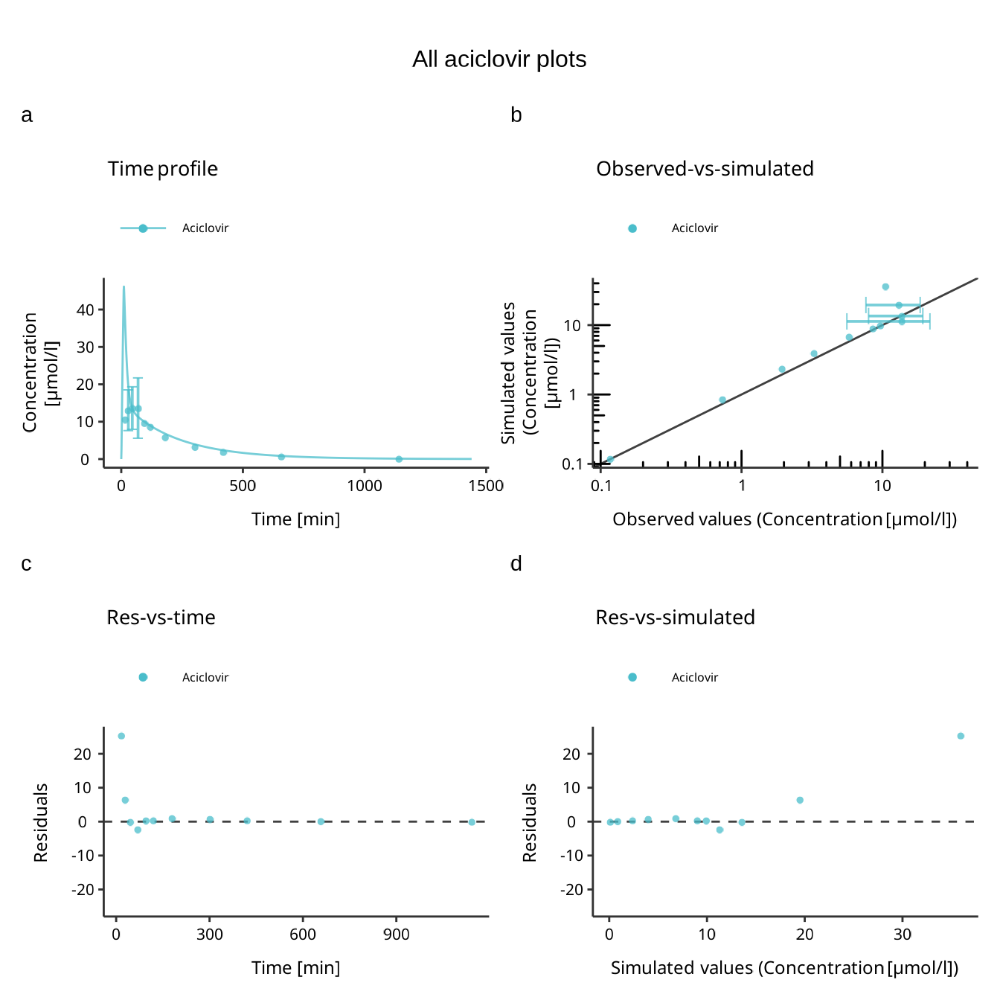

Plotting the simulation results is an integral part of model diagnostics and quality control. esqlabsR implements an excel-based Plotting Workflow for figure creation directly from simulated scenarios. It is also possible to use esqlabsR’s functions to plot using R code.
Plotting Workflow
This process relies on filling a
Plots.xlsx file in order to specify all
the figures that need to be created. Then,
createPlotsFromExcel() will translate the information in
the excel file into plots !
First, DataCombined are defined with simulation results
coming from simulated scenarios and observed data sets in the
DataCombined sheet. More information in the Create a Datacombined section.
From each DataCombined, multiple plots of different
types can be defined using the plotConfiguration sheet.
More information in the Customizing
Plots section.
Each plot to draw is defined in a plotGrid which is specified in the plotGrids sheet. A plotGrid can contain one or several plots defined in the plotConfiguration sheet and has many options to customize the layout of the plots. More information in the Drawing Plots section.
plotGrids export options like size, quality, file type etc… are available in the exportConfiguration sheet. More information in the Export Plot section.
Once all the excel sheets are setup, just call the
createPlotsFromExcel() function to generate and export the
plots.

Specify a DataCombined
A DataCombined is where the data to plot is stored. It
can contain simulated results and/or observed data and links them
together.
First, the user needs to define the name of the dataCombined. The
name need to be stored in the DataCombinedName. Then, for
each DataCombinedName, the user can attach simulated
results (set dataType to simulated) and observed data (set
dataType to observed) and give them labels. For Simulated
results, the user needs to specify the name of the scenario and the
output path of the simulation. For observed data, the user needs to
specify the name of the dataset to use. Finally, both type of data can
be linked together if they share the same value in the
groups column.
Other columns available in this sheet are relative to the data
transformations that can be performed by dataCombined. For
more information on this, please refer to the ospsuite
documentation about it here.
Customizing Plots
The default Plot.xlsx file already contains the most
common columns required to customize plots. However, the user can add
all the necessary columns that are needed to reach the desired result.
The list of available variables can be explored in a
defaultPlotConfiguration object.
Here is a sample of the available plot settings:
#> [1] "foldLinesLegendDiagonal" "foldLinesLegend"
#> [3] "lloqDirection" "displayLLOQ"
#> [5] "errorbarsAlpha" "errorbarsLinetype"
#> [7] "errorbarsCapSize" "errorbarsSize"
#> [9] "ribbonsAlpha" "ribbonsLinetype"
#> [11] "ribbonsSize" "ribbonsFill"
#> [13] "pointsAlpha" "pointsSize"
#> [15] "pointsShape"You can access the full list by running
DefaultPlotConfiguration$new()
For instance, if the subtitle needs to be changed, the user can add a
column named subtitle and fill it with the desired value
for each plot.
Leaving a cell empty will result in the default value being used.
For properties that accept a list of values
(e.g. xAxisLimits), the values should be separated by a
,. If an entry itself contains a ,, enclose it
between parenthesis.
Drawing Plots
plotGrids are the objects that will be used to draw the
plots. They are defined in the plotGrids sheet. The
user needs to define a name for each plotGrid. For single panel plot,
only one plot must be listed in the plotIDs column.
esqlabsR also provide a simple way to combined several
plots in a multi-panel figure, in this case, the user needs to list all
the plotIDs to combine in the plotIDs column, separated by a
,.
To customize the plotGrid, the user can add all the necessary columns
that are defined in the PlotGridConfiguration class. Here
is a sample of the available:
#> [1] "tagMargin" "tagLineHeight"
#> [3] "tagAngle" "tagVerticalJustification"
#> [5] "tagHorizontalJustification" "tagFontFamily"
#> [7] "tagFontFace" "tagSize"
#> [9] "tagColor" "tagPosition"
#> [11] "tagSeparator" "tagSuffix"
#> [13] "tagPrefix" "tagLevels"
#> [15] "design"Export Plots
In order to export plots to image files, the user can use the
exportConfiguration sheet. The plotGrids to export must
be added in the plotGridName column. Then, the output file name must be
specified in the outputName column. The output format can be customize
using the properties listed in the ExportConfiguration
class. Here is a sample of the available:
#> [1] "heightPerRow" "dpi" "units" "height" "width"Plotting Workflow Example
Example Scenario
For the following examples, we will simulate an example scenario as
described in vignette("esqlabsR") and load the
corresponding observed data.
library(esqlabsR)
# Create a project configuration
projectConfiguration <- createProjectConfiguration(exampleProjectConfigurationPath())
# Create `ScenarioConfiguration` objects from excel files
scenarioConfigurations <- readScenarioConfigurationFromExcel(
scenarioNames = "TestScenario",
projectConfiguration = projectConfiguration
)
# Run scenario configuration
scenarios <- createScenarios(scenarioConfigurations = scenarioConfigurations)
simulatedScenarios <- runScenarios(
scenarios = scenarios
)
# Load observed data
dataSheets <- "Laskin 1982.Group A"
observedData <- loadObservedData(projectConfiguration = projectConfiguration, sheets = dataSheets)Setup the Plot.xlsx file
Then, the Plot.xlsx file is setup to define the
DataCombined, customize plots, specify plotGrids and export
options. The Plot.xlsx file used in this example can be
found here.
use createPlotsFromExcel()
In the next step, the user calls the function
createPlotsFromExcel(), passing the generated data:
plots <- createPlotsFromExcel(
simulatedScenarios = simulatedScenarios,
observedData = observedData,
plotGridNames = c("Aciclovir", "Aciclovir2"),
projectConfiguration = projectConfiguration
)The function returns a named list of ggplot2 objects,
with names being the names of the plot grids:
names(plots)
#> [1] "Aciclovir" "Aciclovir2"
plots$Aciclovir
plots$Aciclovir2
Also, calling this function will export the plots as image files if the exportConfiguration sheet is setup correctly.
By default, the function will try to create all plots defined in the
plotGrids sheet. If any of the simulation results or
the observed date required by these plots cannot be found, an error is
thrown. To override this behavior, e.g., to only plot the observed data
without having the results simulated, change the value of the argument
stopIfNotFound to FALSE. You can also specify
which plots to create with the plotGridNames argument.
Plotting With Code
In some situation, the user needs to quickly draw a plot from a
simulation result object using code while wanting to use the default
esqlabsR theme. In this situation, using the Plots.xlsx
file is not necessary. Instead, the user can directly use
esqlabsR’s and ospsuite’s plotting
functions to create the desired plot while preserving the
esqlabsR theme.
Basics of figure creation with {ospsuite}
Simulated modeling scenarios can be passed to plotting functions from
the ospsuite package to create uniformly-looking plots.
To get familiar with the DataCombined class used to store
matching observed and simulated data, read the Working
with DataCombined class article. The article Visualizations
with DataCombined covers the basics of creating
supported plot types and how to customize them.
Using esqlabsR
For the following examples, we will use the same scenario as described in the Example above.
library(esqlabsR)
# Create a project configuration
projectConfiguration <- createProjectConfiguration(exampleProjectConfigurationPath())
# Create `ScenarioConfiguration` objects from excel files
scenarioConfigurations <- readScenarioConfigurationFromExcel(
scenarioNames = "TestScenario",
projectConfiguration = projectConfiguration
)
# Run scenario configuration
scenarios <- createScenarios(scenarioConfigurations = scenarioConfigurations)
simulatedScenarios <- runScenarios(
scenarios = scenarios
)
# Load observed data
dataSheets <- "Laskin 1982.Group A"
observedData <- loadObservedData(projectConfiguration = projectConfiguration, sheets = dataSheets)For the following steps, no Plots.xlsx file is needed.
Instead, we will use the DataCombined class to store the
simulated and observed data, use the ospsuite’s plotting
functions to create the plots together with the esqlabsR
functions to customize the plots and their export.
Create a DataCombined object
The simulation results are stored in a list returned by the
runScenarios() function. Plotting and visualization are
performed by storing these results, matching observed data in a
DataCombined object, and passing it to plotting functions.
Observed data in the form of DataSet objects are added to a
DataCombined object via the addDataSets()
function, and simulated results can be added by using the
addSimulationResults() function. Observed and simulated
data can be linked by setting the groups argument in both
methods. Data sets of the same group will then be plotted together when
calling plotting functions on the DataCombined object.
Let’s create a DataCombined object and populate it with
data with the following code:
dataCombined <- DataCombined$new()
dataCombined$addDataSets(observedData, names = "Observed", groups = "Aciclovir")
dataCombined$addSimulationResults(simulatedScenarios$TestScenario$results,
names = "Simulated",
groups = "Aciclovir"
)You can also return the DataCombined objects defined in
the DataCombined sheet with the function
createDataCombinedFromExcel(), read (this
section)[#specify-a-datacombined] for more information.
Customize and generate plots
Customization of the generated figures - specifying title, axes
ranges, axes units, the position of the legend, etc., are done through
plot configurations - objects of the class DefaultPlotConfiguration.
To combine multiple plots into a multi-panel figure, create a
PlotGridConfiguration object, add plots to it, and plot
with the plotGrid() method. Finally, to export a plot to a
file (e.g., PNG or PDF), use an
ExportConfiguration object.
To use configurations with a similar look and feel in the different
esqLABS projects, create the configurations using the
following functions:
createEsqlabsPlotConfiguration()createEsqlabsPlotGridConfiguration()createEsqlabsExportConfiguration(projectConfiguration)
For the list of supported properties of the
PlotGirdConfiguration, refer to the reference
The next example shows how to create a multi-panel figure using the default configurations.
plotConfig <- createEsqlabsPlotConfiguration()
gridConfig <- createEsqlabsPlotGridConfiguration()
plotConfig$title <- "Time profile"
indivPlot <- plotIndividualTimeProfile(dataCombined, defaultPlotConfiguration = plotConfig)
plotConfig$title <- "Observed-vs-simulated"
obsVsSimPlot <- plotObservedVsSimulated(dataCombined, defaultPlotConfiguration = plotConfig)
plotConfig$title <- "Res-vs-time"
resVsTimePlot <- plotResidualsVsTime(dataCombined, defaultPlotConfiguration = plotConfig)
plotConfig$title <- "Res-vs-simulated"
resVsSimPlot <- plotResidualsVsSimulated(dataCombined, defaultPlotConfiguration = plotConfig)
gridConfig$addPlots(list(indivPlot, obsVsSimPlot, resVsTimePlot, resVsSimPlot))
gridConfig$title <- "All aciclovir plots"
gridPlot <- plotGrid(gridConfig)
gridPlot
Export Plots
To save the plot to a PNG file, use the ExportConfiguration.
Make sure that the fileName argument ends with
.png:
exportConfig <- createEsqlabsExportConfiguration(projectConfiguration$outputFolder)
exportConfig$savePlot(gridPlot, fileName = "All plots.png")By default, the height of the output figure is calculated from the
number of rows in the multi-panel plot and the height defined in
ExportConfiguration$heightPerRow. If you want to define a
fixed height with the parameter ExportConfiguration$height,
set ExportConfiguration$heightPerRow = NULL.
Observed Data
Functionalities of esqlabsR require observed data to be
present as DataSet
objects. Please refer to the article Observed
data for information on loading data from Excel or
*.pkml files. esqlabsR offers a convenience
function loadObservedData() that facilitates loading data
in esqLABS projects. Assuming the standard project folder
structure is followed, and a valid ProjectConfiguration
(see Standard workflow) and Excel
files with observed data are present in the
projectConfiguration$dataFolder folder, the following code
loads the data:
projectConfiguration <- createProjectConfiguration(exampleProjectConfigurationPath())
dataSheets <- "Laskin 1982.Group A"
observedData <- loadObservedData(
projectConfiguration = projectConfiguration,
sheets = dataSheets
)
print(names(observedData))
#> [1] "Laskin 1982.Group A_Aciclovir_1_Human_MALE_PeripheralVenousBlood_Plasma_2.5 mg/kg_iv_"The function loads the data from the file
projectConfiguration$dataFile from the folder
projectConfiguration$dataFolder and returns a list of
DataSetobjects. The resulting object can be used to plot
results to compare simulated and observed data.
Troubleshooting
- At any time, you can check the groups assigned to the datasets in
the
DataCombinedobject by calling theDataCombined$groupMapor by examining the output ofdataCombined$toDataFrame().
More detailed information on function signatures can be found in the following:
-
ospsuitedocumentation on:- loadDataImporterConfiguration()
- DataImporterConfiguration class
- createImporterConfigurationForFile()
- DataSet class
- dataSetToDataFrame()
- loadDataSetsFromExcel()
- loadDataSetFromPKML()
- saveDataSetToPKML()
DataCombinedclassplotIndividualTimeProfile()plotObservedVsSimulated()plotResidualsVsSimulated()plotResidualsVsTime()
-
tlfdocumentation on: